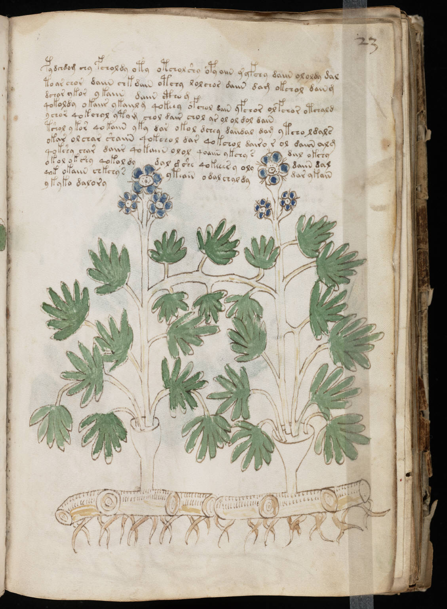

f23r
1pydchdom chy fcholdy oty otchol shy opyaiin y yfchy daiin ololdy dal2to ar chor daiin chkdain otchy lolchor daiin dam okchol daing3dchar ykor ykaiin daiin ctho g4qokoldy okaiir ykaiil g qokeey ofchol dain yfchor olfchor otchald5ychor qokchol ytom chol dair chol ar ol ol dol dain6tshol ykor qokaiin yky dar okol dchey daiidal dam ytcho ldals7okar olchar shaiin qokchol dar qokchol dairo r ol daiin alg8qokshy char daiir qokaiin olol qoaiin ykchy sdiil okchy9okol ok shy qokol dydal dshe qokeees y olydaiin dal10qok okaiin chkchy syteair odal chal dydar ykain11ykyka dalory
